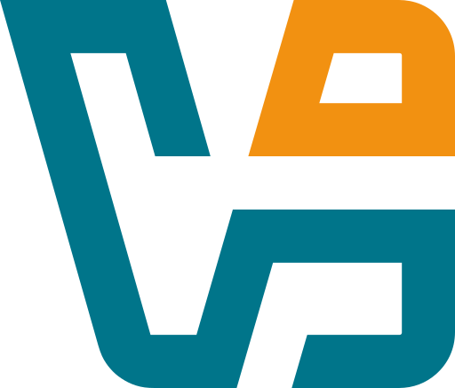
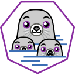
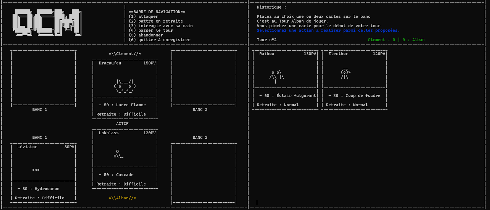

Systèmes & réseaux
Linux / Debian
Bash
SSH

VirtualBox
Podman Docker Traefik RéseauÉtudiant en troisième année de BUT Informatique à l’Université de Lille, je m’intéresse particulièrement aux systèmes, aux réseaux et à l’automatisation. Je recherche un stage de 4 à 6 mois dans ces domaines pour mettre en pratique mes compétences et continuer à progresser.
Télécharger mon CVJe m’appelle Alban Sonneville , étudiant en troisième année de BUT Informatique dans un parcours spécialisé en systèmes et réseaux, je souhaite approfondir mes compétences dans ce domaine. Ce qui me motive avant tout, c'est de concevoir des projets concrets, d'expérimenter et d'évoluer au cœur des nouvelles technologies.
Mes projets universitaires m’ont notamment permis de travailler sur Linux, l’automatisation en Bash, la virtualisation et le déploiement de services. Mon stage chez FLIP m’a également donné l’occasion de développer des outils concrets en PHP et JavaScript. J’aime comprendre le fonctionnement des systèmes, résoudre des problèmes techniques et documenter les solutions mises en place.
Technologies utilisées dans mes projets et expériences.
1er juin - 31 juillet 2026 · 2 mois
Refonte de sites de dépannage et automatisation de contenus web
Au sein des équipes marketing et service après-vente, j'ai contribué à moderniser et mettre à jour Flip Dépannage un site WordPress dédié à l'aide au dépannage de volets roulants.
Reconstruction de la page d'accueil de Flip Dépannage avec Elementor, modernisation de l'interface et réorganisation des questions de dépannage par catégories pour aider les visiteurs à trouver plus rapidement la bonne réponse. Création et mise à jour d'environ 600 notices de dépannage, en collaboration avec le SAV et le bureau d'études, pour tenir compte des produits et procédures les plus récents.
Développement de deux extensions sur mesure : import des notices de Flip vers Youve via l'API REST WordPress, puis import en un clic des images manquantes afin de réduire les saisies répétitives et les risques de doublons.
Développement en JavaScript d'un bot qui analyse les mots de la demande et classe les notices selon un score de pertinence. Étude d'une évolution vers un chatbot avec IA, soumise à validation interne en raison des enjeux liés aux données personnelles.
Ajout d'un cookie pour limiter l'affichage répété de fenêtres d'information et mise en place d'une page 404 à l'aide d'une extension existante. Participation aux échanges techniques autour du dépannage des produits Zigbee.
Une sélection de projets illustrant mes compétences en systèmes, réseaux, automatisation et développement.

Installation et configuration d’un service de messagerie Matrix Synapse dans un environnement virtualisé Debian, avec base PostgreSQL et client web Element.
Outil CLI en Bash pour déployer et administrer une infrastructure SaaS multi-clients basée sur Dolibarr, avec conteneurs Docker, reverse proxy Traefik et base PostgreSQL.
dolib-saas
fonctionnel avec commandes
init
,
createuser
,
deleteuser
,
show
,
start
et
down
. Chaque client dispose d'une instance Dolibarr isolée, accessible via une URL dédiée (nomclient.machine.iutinfo.fr). Documentation man-page incluse.
Mise en place d'une machine virtuelle Debian 64 bits avec VirtualBox afin de configurer un environnement de développement.
Jeu développé en JavaFX mettant en œuvre différents algorithmes de génération de labyrinthes, un mode histoire progressif, un système de profils utilisateurs et une interface inspirée de l'univers Star Wars.

Application JavaFX permettant d'importer des adolescents depuis un fichier CSV, de gérer les rôles hôte/visiteur et de former des paires selon un score d'affinité.

Jeu de cartes au tour par tour affiché dans le terminal. Les attaques reposent sur des QCM adaptés au niveau scolaire du joueur, afin de garder un équilibre entre apprentissage et gameplay.